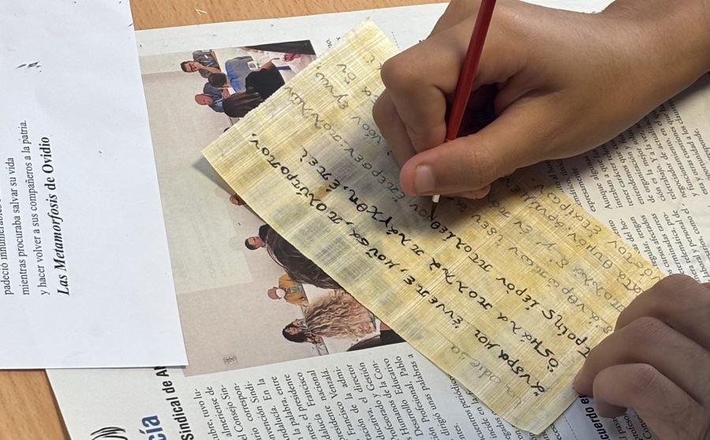
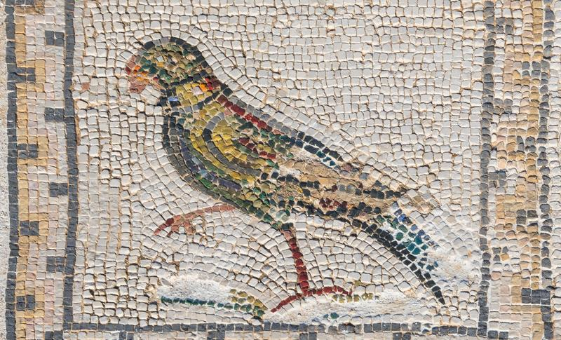
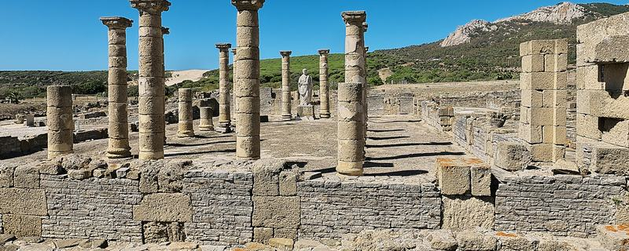
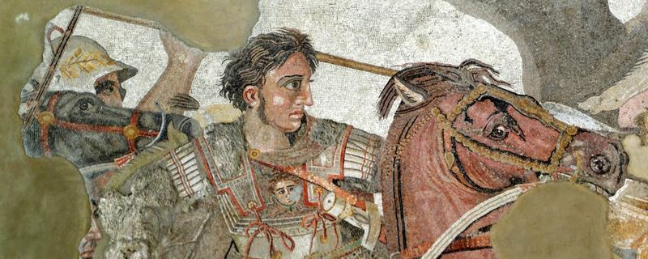
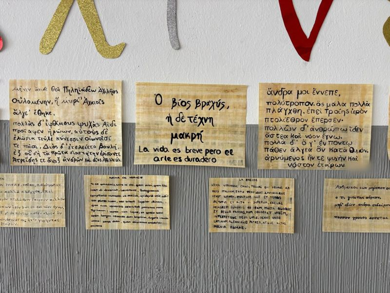

Primer trimestre
Taller de papiros
Escribimos sobre papiro, como en la Antigüedad, versos de Homero, Virgilio y Horacio.
Departamento de Latín y Griego
Ven a descubrirla con nosotros: en la ESO, en el Bachillerato de Humanidades y en la enseñanza de personas adultas.
Sapere aude: "atrévete a saber".
Empieza por aquí
Descubre Latín en 4.º: palabras, mitos y la vida en Roma.
Ver Latín en 4.º →El itinerario de Humanidades, con Latín y Griego en los dos cursos.
Ver el itinerario →Bachillerato por la tarde-noche y semipresencial, compatible con tu vida.
Ver personas adultas →Cuatro razones
La mayor parte del vocabulario del castellano viene del latín. Conocer las raíces mejora la comprensión y la ortografía.
Medicina, biología y tecnología hablan con raíces griegas y latinas. Quien las conoce, entiende antes.
Traducir es analizar, ordenar y decidir: un entrenamiento que sirve para cualquier estudio.
Mitología, filosofía, democracia, derecho y teatro: Grecia y Roma explican mucho de lo que somos.

ESO
Tu primer contacto con el latín y la mejor puerta al Bachillerato de Humanidades.
Una materia para descubrir de dónde vienen las palabras que usas cada día, cómo se vivía en Roma y por qué los mitos clásicos siguen apareciendo en el cine, las series y los videojuegos.
Para las familias: Latín es una materia optativa de 4.º de ESO. Se elige al hacer la matrícula, no exige conocimientos previos y es compatible con cualquier Bachillerato posterior.
Mira cómo es un día en clase de Latín →
Descarga la presentación de Latín en 4.º de ESO (PDF) → (se abre en una pestaña nueva)

Bachillerato
En la matrícula lo encontrarás dentro de la modalidad de Humanidades y Ciencias Sociales: elige el itinerario de Humanidades, el que incluye Latín y Griego en los dos cursos.
La primera toma de contacto.
Lengua, textos y cultura de Grecia y Roma.
Traducción de autores clásicos y preparación de la PAU (la antigua PEvAU o Selectividad).
Filologías, Historia, Historia del Arte, Filosofía, Derecho, Periodismo, Magisterio, Traducción, Turismo…
Salidas universitarias
Con el Bachillerato de Humanidades y la PAU puedes acceder a cualquier grado universitario. Y Latín II y Griego II te ayudan a subir la nota de admisión en muchísimos de ellos.
En las universidades andaluzas, Latín II o Griego II ponderan en todos los grados de Artes y Humanidades y de Ciencias Sociales y Jurídicas: más de 120 grados y dobles grados.
Educación Infantil, Educación Primaria y Educación Social, y sus dobles grados.
Filología Hispánica, Filología Clásica, Estudios Ingleses, Estudios Franceses, Estudios Árabes e Islámicos, Estudios de Asia Oriental, Lenguas Modernas, Lingüística, Literaturas Comparadas y Traducción e Interpretación.
Historia, Historia del Arte, Geografía e Historia, Arqueología, Gestión Cultural, Cine y Cultura, e Historia y Ciencias de la Música.
Filosofía, Humanidades, Información y Documentación, y el doble grado de Matemáticas y Filosofía.
Periodismo, también en sus dobles grados con Comunicación Audiovisual y con Ciencias Políticas.
Derecho y todos sus dobles grados, Relaciones Internacionales, Publicidad y Relaciones Públicas, Bellas Artes y Conservación y Restauración. Griego II también pondera en todos ellos (0,1, y 0,2 en algunos dobles grados).
Administración y Dirección de Empresas, Economía, Finanzas y Contabilidad, Marketing e Investigación de Mercados, Turismo, Comunicación Audiovisual, Ciencias Políticas, Sociología, Trabajo Social, Relaciones Laborales, Pedagogía y Criminología, entre otros.
Fuente: parámetros de ponderación del Distrito Único Universitario de Andalucía para la admisión en el curso 2027-2028 y siguientes: Acuerdo de 15 de mayo de 2025 (se abre en una pestaña nueva) (BOJA n.º 192, de 6 de octubre de 2025), con la aclaración del BOJA n.º 207 (se abre en una pestaña nueva), de 28 de octubre de 2025, y Acuerdo de 1 de junio de 2026 (se abre en una pestaña nueva) (BOJA n.º 112, de 12 de junio de 2026). Los parámetros pueden revisarse y fuera de Andalucía cada universidad publica los suyos: antes de decidir, consulta la tabla oficial en el portal del Distrito Único Andaluz (se abre en una pestaña nueva) o pregunta en Orientación.
Escribe tus notas (o las que esperas sacar) y mira cuánto suben Latín II y Griego II. Puedes cambiar la ponderación según el grado que te interese.
Cálculo orientativo. Nota de acceso = 0,6 × nota media de Bachillerato + 0,4 × fase de acceso (hace falta al menos un 4 en la fase de acceso y un 5 de nota de acceso). A ella se suman las dos materias más favorables, aprobadas con 5 o más, multiplicadas por su ponderación: aquí se cuentan solo Latín II y Griego II. La ponderación de cada grado está en la ficha de ponderaciones (se abre en una pestaña nueva) y en el portal del Distrito Único Andaluz (se abre en una pestaña nueva).

Paso a paso
Elegir Latín y Griego es muy sencillo: solo hay que marcarlo en el momento adecuado.
Cuando elijas las materias de 4.º, marca Latín. Te lo preguntarán en el instituto antes de acabar el curso y lo confirmarás en la matrícula, del 1 al 10 de julio.
Elige la modalidad de Humanidades y Ciencias Sociales y, dentro de ella, el itinerario de Humanidades, con Latín I y Griego I. La matrícula es del 1 al 10 de julio.
Solicita plaza en el IES Sabinar del 1 al 31 de marzo y, cuando te admitan, matricúlate del 1 al 10 de julio.
El Bachillerato semipresencial tiene sus propios plazos y requisitos. Los tienes en el apartado de personas adultas.
Los trámites se hacen en la secretaría del centro o por internet, en la Secretaría Virtual de los centros educativos (se abre en una pestaña nueva) de la Junta de Andalucía. Las fechas son las habituales del procedimiento: confírmalas cada curso en el portal de Escolarización (se abre en una pestaña nueva). ¿Dudas? Pregunta en Orientación o llama al 950 156 783.
Antiguos alumnos

Gracias al Latín y al Griego pude entrar en Derecho, la carrera que quería. Estudiar Humanidades me dio algo más valioso que conocimientos: una manera de pensar y de mirar más allá de lo evidente.
Paolo Godoy Lvova · Antiguo alumno del IES Sabinar · Grado en Derecho, Universidad de Granada
El Bachillerato de Humanidades me permitió desarrollar una visión más amplia y crítica del mundo y descubrir mi pasión por las lenguas. La formación que recibí en Latín y Griego me facilitó la carrera, y hoy trabajo como editora, traductora y redactora de contenidos educativos.
Lucía Guerrero Barrionuevo · Antigua alumna del IES Sabinar · Doble Grado en Estudios Ingleses y Filología Hispánica, Universidad de Almería
Empecé el Bachillerato renunciando a un grado medio en el que ya me habían admitido, y no me arrepiento. Si estás trabajando, los profesores del nocturno te facilitan medios para entregar las tareas, te explican lo que necesites las veces que haga falta y entienden que tenemos una vida detrás de los estudios. Volvería a cursarlo sin ninguna duda.
Rosa María Manzano Escudero · Antigua alumna del Bachillerato de adultos del IES Sabinar · Estudia el Grado Superior de Comercio Internacional
Estudiar esta modalidad no te cierra puertas. Al contrario, te proporciona una base cultural y una forma de pensar que puedes llevar contigo a cualquier camino que decidas emprender. A quienes estén pensando en elegir Humanidades les diría que no tengan miedo a hacerlo por los prejuicios o las opiniones de los demás.
Alba Cobo Amezcua · Antigua alumna del Bachillerato de adultos del IES Sabinar (2020-2021) · Ciclo Superior de Documentación y Administración Sanitarias; prepara las oposiciones a la Guardia Civil
Resolvemos tus dudas
No. En 1.º de Bachillerato, Latín I y Griego I empiezan desde cero. Si has cursado Latín en 4.º, llegas con ventaja, pero no es imprescindible.
Exige constancia, como cualquier materia, pero se aprende paso a paso y con mucho acompañamiento. Los resultados lo demuestran: en la PAU de 2026, el alumnado del IES Sabinar obtuvo una media de 8,58 en Griego II y de 8,14 en Latín II, entre las más altas del centro.
No. Lleva a Derecho, Periodismo, Educación, Traducción e Interpretación, Historia, Publicidad, Relaciones Internacionales, edición de contenidos, lingüística computacional, oposiciones… Mira el apartado "¿Qué puedo estudiar después?".
No. Con el Bachillerato y la PAU puedes acceder a cualquier grado universitario. Las ponderaciones solo suman: en algunos grados, Latín II y Griego II te dan puntos extra; en los demás, cuentan las otras materias.
Hasta 4 puntos. La nota de admisión suma a la nota de acceso (hasta 10) las dos materias aprobadas más favorables, multiplicadas por su ponderación (0,1 o 0,2). En Andalucía, Latín II o Griego II ponderan en todos los grados de Artes y Humanidades y de Ciencias Sociales y Jurídicas. Lo tienes todo, con las fuentes oficiales, en la ficha de ponderaciones y nota de admisión (se abre en una pestaña nueva).
Sí. Latín de 4.º de ESO es compatible con cualquier Bachillerato, y buena parte del vocabulario de la Medicina, la Biología o la Química es de origen griego y latino. Además, traducir entrena lo que piden todas las carreras: comprender, analizar y expresarse con precisión.
Sí. Las principales son estas:
Los plazos y los requisitos cambian cada año: consulta siempre la convocatoria vigente. Para cualquier duda, el Departamento de Orientación del centro te puede ayudar.
Sí. Puedes pedir plaza en el plazo de admisión, del 1 al 31 de marzo. Tienes los pasos en "Cómo apuntarte". Si tienes dudas, pregunta en el Departamento de Orientación de tu centro o llama al IES Sabinar.
Sí. El IES Sabinar ofrece el Bachillerato de Humanidades para personas adultas en régimen semipresencial: pocas horas de clase por la tarde-noche y el resto en la plataforma Moodle, a tu ritmo y con seguimiento del profesorado. Tienes toda la información en el apartado "Personas adultas".
En el Departamento de Orientación, en el Departamento de Latín y Griego o llamando al instituto al 950 156 783. Te atenderemos encantados.
Curso 2026-2027



Escribimos sobre papiro, como en la Antigüedad, versos de Homero, Virgilio y Horacio.
Salida para ver la adaptación del poema de Homero, con trabajo antes y después de la proyección.
Con el Departamento de Orientación, presentamos el Bachillerato de Humanidades al alumnado que está a punto de elegir.
Personas adultas · Semipresencial
Bachillerato de Humanidades por la tarde-noche, tres tardes a la semana y el resto desde casa.
Ver el Bachillerato para personas adultas →Aprende y juega
Un día en clase, la palabra de la semana, dos juegos y todas las fichas y recursos del departamento.
Entrar en Aprende y juega →Profesorado
Turno diurno
Turno nocturno y semipresencial
marcelolorente@correo.ies-sabinar.com
Autor de situaciones de aprendizaje de Latín I para los Recursos Educativos Abiertos de la Junta de Andalucía. Ver sus unidades, en abierto →
Departamento de Latín y Griego
¿Tienes dudas o quieres saber si Humanidades es para ti? Escríbenos a marcelolorente@correo.ies-sabinar.com o a tic@correo.ies-sabinar.com, o llama al instituto (950 156 783) y pregunta por el Departamento de Latín y Griego. Te atenderemos encantados.